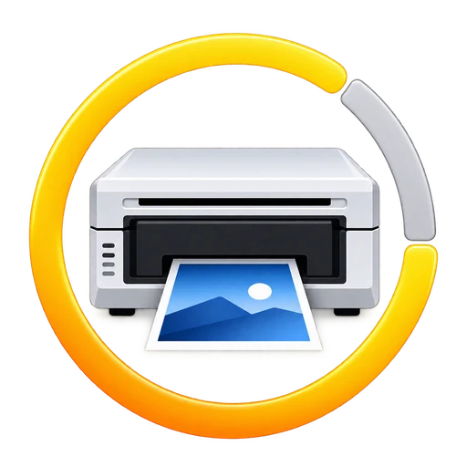

Consulter les tirages restants d’un consommable photo depuis un smartphone.
AndroidNFC / RFIDDonnées localesExport CSV / JSON

Identité visuelle de l’application PrintLeft.Le besoin
Connaître la capacité restante des consommables photo compatibles et suivre plusieurs rouleaux.
La réalisation
Une application Android de lecture NFC, avec présentation des données identifiées, historique local et export.
L’usage
Une consultation depuis un téléphone équipé du NFC, sans compte et sans connexion Internet.
Besoin et contraintes
Préparer une prestation avec plusieurs consommables
PrintLeft répond à un besoin rencontré en photo événementielle : connaître les tirages encore disponibles avant une prestation et suivre plusieurs rouleaux sans devoir les réinstaller dans une imprimante pour chaque consultation.
Le principe consiste à lire, depuis un téléphone Android équipé du NFC, les informations présentes sur l’étiquette du consommable compatible. La consultation doit rester rapide, compréhensible et indépendante d’une connexion Internet.
Conception et architecture
Relier lecture NFC, interprétation et affichage
Le travail porte sur des étiquettes NFC de type ISO 15693, notamment de la famille SLIX rencontrée sur les consommables étudiés. La lecture permet de récupérer un identifiant et les données nécessaires à leur interprétation, sans modifier l’étiquette.
L’application présente les champs qu’elle peut identifier : tirages restants, capacité, format, famille d’imprimantes ou modèles associés et identifiant du rouleau. La difficulté n’est pas seulement de lire une étiquette, mais d’associer correctement les données à leur signification et de distinguer une information reconnue d’un cas non pris en charge.
La compatibilité dépend du consommable et du matériel NFC du téléphone. Elle ne doit pas être déduite de la seule présence d’une étiquette.
Réalisation et intégration
Transformer une lecture ponctuelle en outil de suivi
Après un scan, le rouleau peut être enregistré dans un historique local. Une jauge donne une lecture immédiate de la capacité restante ; le tri par date, format ou imprimante facilite la gestion de plusieurs références.
Une correction manuelle permet d’ajuster les informations conservées dans l’application. Elle concerne le suivi local et ne constitue pas une réécriture de l’étiquette. Les exports CSV et JSON rendent les informations réutilisables en dehors du téléphone.
Le développement associe ainsi accès NFC Android, interprétation de données techniques, stockage local et présentation d’un inventaire. Le fonctionnement reste sans compte, sans publicité et sans connexion Internet.
Essais et validation
Construire une matrice de compatibilité
Les consommables DNP RX1HS et QW410 font partie des références utilisées pour les essais du projet. L’extension à d’autres familles, notamment Citizen, demande une confirmation par référence ; elle n’est pas présentée comme une compatibilité générale acquise.
La documentation des essais doit rapprocher une lecture NFC de la capacité connue du rouleau, vérifier sa reconnaissance lors de scans successifs et contrôler la cohérence de l’historique et des exports. Les relevés détaillés et la matrice des téléphones testés restent à joindre à la fiche.
Résultat et prochaines étapes
Une interface mobile pour des données de terrain
PrintLeft transforme la lecture d’un consommable en une information exploitable pour préparer et suivre une prestation photo. Le projet illustre l’association d’une interface Android avec des données NFC et un historique utilisable hors ligne.
Les compléments utiles sont des captures du résultat d’un scan, de la liste des rouleaux et d’un export, accompagnées des références effectivement testées.
Un projet similaire ?
Relier votre produit à une application.
Lecture NFC, présentation de données et outils mobiles adaptés à vos usages.